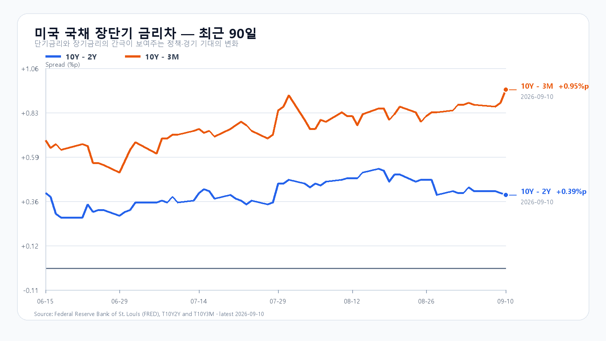
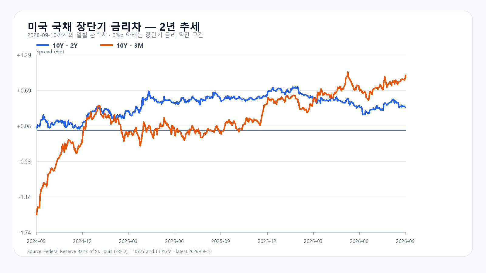

KOSPI가 전날 지켜 낸 7,000선을 다시 시험받는다. 미국 반도체주가 일제히 하락한 뒤 삼성전자와 SK하이닉스도 NXT 장전 거래에서 함께 밀렸다. 유가와 미국 국채금리 상승에 원화 약세까지 겹쳐, 오늘은 반등의 크기보다 개장 뒤 매도가 줄어드는지가 먼저다.
유가가 올리고, 금리가 누른다
9월 10일 브렌트유는 6.3% 오른 배럴당 107.63달러에 정산됐다. 미국과 이란의 해운 공격 확대는 에너지 수입 의존도가 높은 한국에 비용 부담을 더한다. 전날 한국장에 반영된 유가 100달러 돌파에 이어, 밤사이 상승폭이 더 커졌다는 점이 새 악재다. AP 시장 마감
미국 8월 생산자물가(PPI)는 전월 대비 0.4%, 전년 대비 5.4% 상승했다. 최종수요 에너지 가격이 4.2%, 디젤연료가 24.1% 뛰었다. 반면 서비스 상승률은 0.1%였다. 생산단계 에너지 비용이 오른 상황에서 오늘 밤 소비자물가(CPI)가 금리 기대를 다시 흔들 수 있다. 미 노동통계국 PPI
미 재무부의 9월 10일 국채금리는 3개월 4.00%, 2년 4.56%, 10년 4.95%다. 하루 전보다 각각 5bp, 13bp, 12bp 올랐다. 10년-2년 금리차는 0.39%포인트로 1bp 좁아졌지만, 장기금리 자체가 오른 만큼 성장주 평가에는 부담이다. 10년-3개월 금리차는 0.95%포인트로 7bp 확대됐다. 미 재무부 일별 금리 · FRED 금리차
미국 반도체, 시간외에도 회복은 작았다
미국 9월 10일 정규장은 11일 05:00 KST에 끝났다. 반도체 ETF가 나스닥100 ETF보다 크게 내렸고 Micron의 낙폭이 두드러졌다.
| 종목 | 정규장 종가·달러 | 등락률 |
|---|---|---|
| QQQ | 708.69 | -1.06% |
| TQQQ | 69.21 | -3.27% |
| SOXX | 517.43 | -2.74% |
| SMH | 560.28 | -2.44% |
| Nvidia | 218.36 | -2.26%† |
| AMD | 503.60 | -3.36% |
| Micron | 977.41 | -4.90% |
| Broadcom | 360.83 | -0.97% |
† Nvidia는 배당락을 반영한 Nasdaq 등락률이며 나머지는 Yahoo Finance 표시 기준이다. SOXX는 장중 고점 522.50달러를 지키지 못하고 517.43달러로 마감했다. Micron도 고점 999.00달러에서 977.41달러로 밀렸다. 08:11~08:12 KST Nasdaq 시간외 스냅샷에서 이들 8종목의 정규장 종가 대비 변화는 -0.30~0.00%에 그쳤다. 정규장 매도를 뒤집을 만큼의 회복은 아니었다. Nasdaq QQQ · TQQQ · SOXX · SMH · Nvidia · AMD · Micron · Broadcom
AI 수요와 주식 가격은 다른 속도로 움직인다
Oracle의 2027회계연도 1분기 매출은 193억달러로 전년 대비 30% 늘었고, OCI 인프라 매출은 74억달러로 121% 증가했다. 잔여수행의무(RPO)는 6,640억달러다. AI 인프라 주문은 여전히 강하지만, 계약잔액이 당장 현금으로 들어오는 것은 아니다. 회사가 제시한 연간 설비투자 900억~950억달러와 분기 잉여현금흐름 -50억달러는 확장에 드는 자금 부담도 보여 준다. Oracle 공식 실적
TSMC의 8월 연결 매출도 전년 대비 53.3% 늘어난 5,148억600만 대만달러였다. 연산 수요가 사라졌다는 해석과는 거리가 있다. 다만 파운드리 매출이나 클라우드 계약잔액만으로 삼성전자·SK하이닉스의 HBM 주문량과 수익을 계산할 수는 없다. 메모리의 공급·가격 조건과 높은 금리에서 주식에 지불할 가격을 나눠 봐야 한다. TSMC 월매출
메모리 현물은 품목별로 갈렸다. 9월 10일 19:10 KST 기준 DDR5 16Gb 평균은 54.333달러로 0.31%, DDR4 16Gb는 90.50달러로 0.55% 내렸다. 같은 용량의 eTT 제품은 각각 0.83%, 0.71% 올랐다. 9월 9일 공개 주간 집계의 512Gb TLC 웨이퍼는 20.146달러로 2.71% 하락했다. 범용 메모리 전체가 한 방향으로 오르는 장은 아니다. TrendForce 현물표 · 주간 NAND·DRAM
계약시장은 현물과 온도가 다르다. TrendForce는 3분기 범용 DRAM 계약가격이 전분기 대비 13~18% 오를 것으로 전망했다. HBM·서버 수요가 공급을 끌어가는 가운데 고용량 RDIMM의 가격 프리미엄은 줄고 있다. 기업용 SSD 수요의 강세도 소비자용 NAND 현물 약세와 구분해야 한다. 이처럼 메모리 수요가 유지돼도 금리와 주식 수급이 악화되면 주가는 먼저 내릴 수 있다. TrendForce DRAM 산업 자료 · 기업용 SSD
7,000선을 지켜도 외국인 매도는 남았다
9월 10일 KOSPI는 6,898.45까지 내려갔다가 7,033.92로 마감해 하루 낙폭을 0.25%로 줄였다. 고점은 7,072.79였다. KODEX 레버리지는 109,815~116,050원에서 움직인 뒤 115,000원에 마감했다. 오늘의 1차 지지는 전일 저점 109,815원, 반등 기준은 112,500원, 저항은 전일 종가 115,000원으로 둔다. 장전 악재로 지지선 아래에서 출발하면 109,815원은 회복 여부를 보는 선으로 바뀐다. KOSPI 일봉 · KODEX 일봉
전일 외국인은 코스피 현물을 2조4,907억원 순매도했다. 개인은 3,622억원, 기관은 4,615억원 순매수했다. 프로그램은 차익 4,403억원 순매수에도 비차익이 2조9,761억원 순매도해 전체로는 2조5,358억원 순매도였다. 지수가 종가를 끌어올렸다고 외국인 매도까지 끝났다고 볼 수는 없다. 서울신문 KRX 마감 수급
미국장에서 거래되는 한국 ETF·ADR의 등락에는 이미 끝난 한국장의 움직임이 섞인다. 오늘 추가로 부담이 된 것은 한국장 마감 뒤의 PPI, 유가·국채금리 상승과 미국 반도체 매도다. NXT 가격은 그 재료가 국내 메모리주에 전달되는 모습을 보여 준다. 개장 후에는 은행 고시환율과 별도로 외국인 현물·프로그램 수급이 같은 방향으로 움직이는지 살펴야 한다.
오늘의 가격 조건
대응 비중은 공격 15, 관망 45, 방어 40으로 둔다. 아래 확률은 각 종가 구간에 대한 조건부 전망이며 대응 비중과 구분한다.
| 시나리오 | 종가 범위·확률 | 성립 조건 | 무효화 |
|---|---|---|---|
| 기본 | 6,800~7,000 · 50% | 6,800 이상, 7,000 이하, 외국인 현물 순매도 1조원 이내 | 6,800 이탈 또는 7,000 돌파 |
| 강세 | 7,000 초과~7,150 · 20% | 7,000 돌파, 외국인 현물 순매수, 프로그램 전체 순매수 | 7,000 아래 재진입 |
| 약세 | 6,550~6,800 미만 · 30% | 6,800 이탈, 외국인 현물 순매도, 프로그램 전체 순매도 | 6,800 회복 |
별도 장중 예상 범위는 6,450~7,250이며 명목 포괄 수준은 90%다. 실제 장중 변동은 이 범위를 벗어날 수 있다. 09:30에는 시초가 이후 메모리주의 낙폭과 6,800 방어, 10:00에는 외국인·프로그램 매매의 동행 여부, 14:00에는 수급이 반전했는지를 다시 본다. 조건 관측 마감은 15:20이다.
오늘 밤 21:30 KST 미국 8월 CPI가 나온다. 다음 주요 일정은 9월 16일 21:30 소매판매·수출입물가, 17일 03:00 FOMC 결정과 경제전망, 03:30 기자회견이다. 오늘 한국장은 CPI 발표 전에 끝나므로 발표 결과에 대한 위험은 주말과 다음 거래일로 이어진다. BLS CPI 일정 · 미 Census 일정 · 연준 FOMC 일정
장전 가격
| 항목 | 가격·변화 | 출처 시각 |
|---|---|---|
| 삼성전자 NXT | 259,500원 · -3.53% | 2026-09-11T08:21:07.100309+09:00 |
| SK하이닉스 NXT | 1,791,000원 · -3.35% | 2026-09-11T08:21:07.100318+09:00 |
| 달러/원 하나은행 고시 | 1,351.00원 · 0.75% | 2026-09-11T07:57:55+09:00 |
| Nasdaq100 선물 | 29,106.25 · -0.100% | 2026-09-11T08:11:03+09:00 · 지연 시세 |
| S&P500 선물 | 7,600.25 · +0.023% | 2026-09-11T08:11:02+09:00 · 지연 시세 |
| 브렌트 선물 | 108.90 · +1.180% | 2026-09-11T08:10:40+09:00 · 지연 시세 |
| WTI 선물 | 103.79 · +1.278% | 2026-09-11T08:11:01+09:00 · 지연 시세 |
NXT · 환율 · Nasdaq100 선물 · S&P500 선물 · 브렌트 · WTI
NXT는 국내 정규장과 별도 시장이다. 환율은 은행 고시이며 선물은 지연 시세다.

